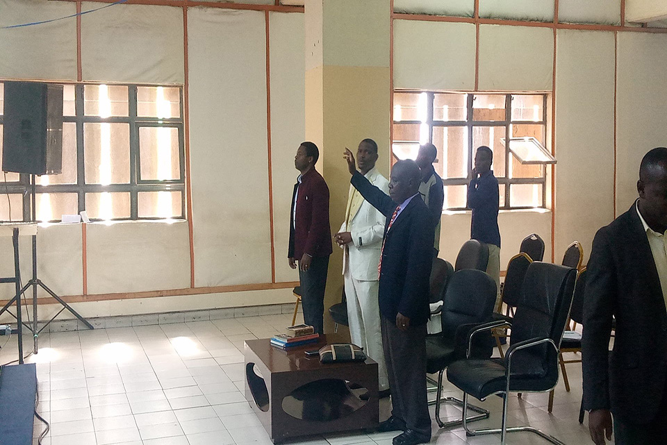

Upcoming Missions
Description:Join us as we embark on impactful missions to spread love, hope, and compassion to communities in need. Our upcoming missions provide opportunities for volunteers to make a tangible difference through service
projects, outreach initiatives, and humanitarian aid efforts. From local community outreach to international relief missions, each opportunity is a chance to share God's love and demonstrate His compassion to those who need
it most. Be part of something greater than yourself and join us in making a positive impact in the lives of others.

Mission Focus Areas:
- Local Community Outreach
- International Relief Missions
- Homeless Shelter Support
- Orphanage Assistance Programs
- Disaster Relief Efforts
- Medical Mission Trips
Question and answer sessions will be available so as to tackle any matter or issues onboard
Eligibility:
All individuals passionate about serving others and making a difference are welcome to participate in our upcoming missions. No prior experience is required, just a heart willing to serve and love others.
Skills you will gain:
- Skills You Will Gain: Compassionate service and outreach skills.
- Cultural sensitivity and global awareness.
- Teamwork and collaboration. Leadership and initiative.
- Problem-solving and adaptability. Empathy and understanding.
Prerequisite:
There are no specific prerequisites for joining our upcoming missions. Simply sign up with a willing heart and a desire to serve, and we'll provide you with the necessary training and support.
Fee:
- The cost varies depending on the mission location, duration, and logistics.
- Fundraising and sponsorship opportunities may be available to offset costs for participants.
Duration:
- Mission durations vary depending on the specific project and location.
- Participants should be prepared to commit to the duration of the mission, which lasts for 1 week.
Note:
- Attendees are encouraged to bring their own Bibles, notebooks, and pens for taking notes during sessions.
- Attendees are encouraged to bring their own Bibles, notebooks, and pens for taking notes during sessions.
- Comfortable attire is recommended for the conference, including casual clothing suitable for both indoor and outdoor activities.
- Merchandise such as T-shirts, polo necks, round necks, water bottles, handbags, and notebooks will be available for purchase at the conference venue. Don't forget to bring extra cash if you'd like to purchase any of these items
as souvenirs. Click here to order online
- Please ensure to bring any necessary personal items, such as sunscreen, hats, and water bottles, for outdoor activities or outreach missions.Comfortable attire is recommended for the conference, including casual clothing suitable
for both indoor and outdoor activities.
- Participants should be prepared for physical exertion and challenging conditions, depending on the nature of the mission.
Please fill the following form to register